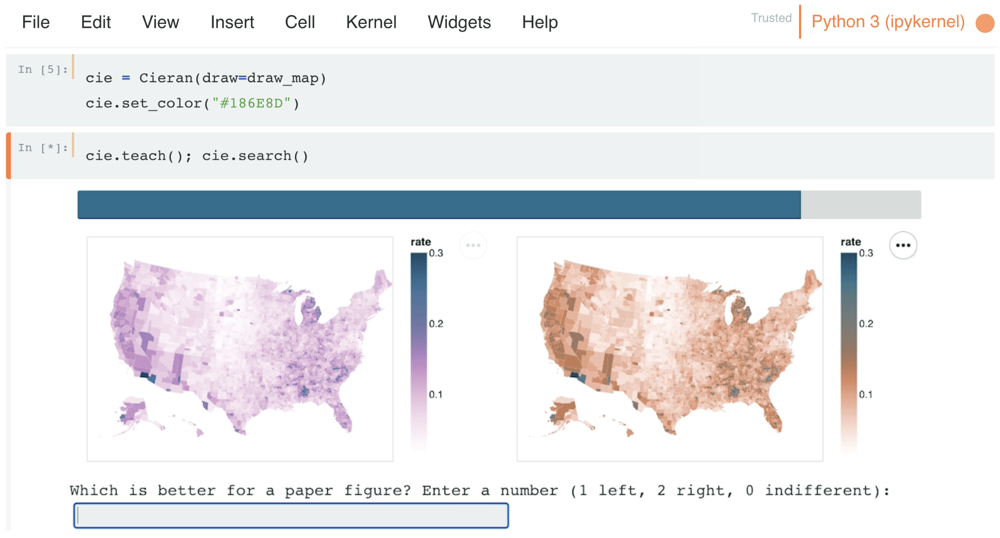

Introduction
Note: This package is currently under development. The documentation is incomplete and the package is not yet available on PyPI. However, the code is available on GitHub and can be installed via pip.
What is Cieran?
Cieran is a Python package for designing visualization colormaps via active preference learning.
Using pairwise comparisons, Cieran learns your preferences toward visualization colormaps. It uses this model to both rank expert-designed colormaps and create new ones.

Installation
Use the package manager pip to install cieran.
pip install cieran
Usage
from cieran import Cieran
cie = Cieran(draw=draw_map)
cie.set_color("#f88253")
cieran.teach()
cieran.search()
Citing Cieran
If you use Cieran in your research, please cite the following paper:
@inproceedings{hong2024cieran,
title={Cieran: Designing Sequential Colormaps via In-Situ Active Preference Learning},
author={Hong, Matt-Heun and Sunberg, Zachary N. and Szafir, Danielle Albers},
booktitle={Proceedings of the CHI Conference on Human Factors in Computing Systems (CHI '24)},
year={2024},
publisher={ACM},
address={New York, NY, USA},
doi={10.1145/3613904.3642903}
}
License
Acknowledgements
Cieran borrows code from the APReL package licensed under the MIT License. We would like to thank the original authors for their contributions.